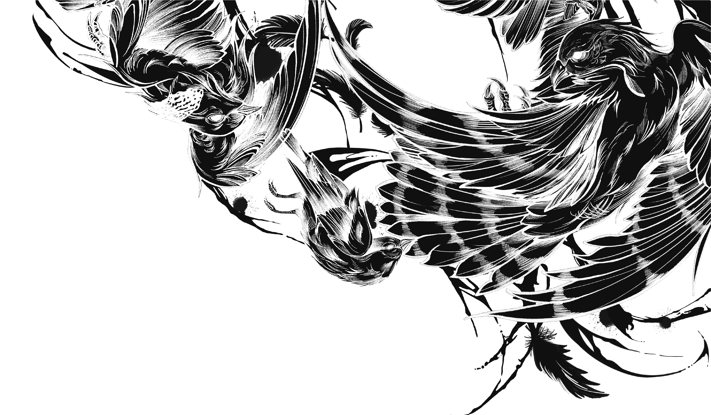

01
無法辨識死因
窗殺並不一定會導致外傷或出血。許多鳥類在高速撞擊後，外觀看似完好，實則內部顱內出血或頸椎骨折。

黑數造成的數據偏差，低估了窗殺對鳥類族群與生態系統的衝擊，也使防治政策與資源配置面臨挑戰。
窗殺並不一定會導致外傷或出血。許多鳥類在高速撞擊後，外觀看似完好，實則內部顱內出血或頸椎骨折。

撞擊後的鳥類常因腎上腺素激增而短暫恢復行動力，強撐著飛離現場。隱藏的內出血、腦震盪仍會奪走生命。

鳥屍在都市中消失的速度極快。流浪貓狗、烏鴉或清潔人員常在一般人上班前就將鳥屍清掃乾淨。